Generated by scripts/compare_meta_to_benchmark.py.
| run | run_dir | manual_meta | aggregate_rows | |
|---|---|---|---|---|
| 0 | v1 | /home/zorro/repos/autonima-results/projects/decision_making/v1 | False | all_analyses, all_studies, all_abstract |
| 1 | v2 | /home/zorro/repos/autonima-results/projects/decision_making/v2 | False | all_analyses, all_studies, all_abstract |
| 2 | v2-annotation-only | /home/zorro/repos/autonima-results/projects/decision_making/v2-annotation-only | False | all_analyses, all_studies, all_abstract |
No rows.
| manual_name | auto_name | manual_exists | run::v1 | run::v2 | run::v2-annotation-only | |
|---|---|---|---|---|---|---|
| 0 | adm_july2019 | ambiguous_dm | True | True | True | True |
| 1 | rdm_july2019 | risky_dm | True | True | True | True |
| 2 | perceptual_dm_july2019 | perceptual_dm | True | True | True | True |
Counts are computed from each run's nimads_annotation.json and PMID-linked through nimads_studyset.json. Includes mapped annotations and all* annotations.
| run | manual_name | auto_name | n_analyses | n_unique_pmids | is_mapped | |
|---|---|---|---|---|---|---|
| 0 | v1 | adm_july2019 | ambiguous_dm | 106 | 47 | True |
| 1 | v2 | adm_july2019 | ambiguous_dm | 229 | 54 | True |
| 2 | v2-annotation-only | adm_july2019 | ambiguous_dm | 80 | 15 | True |
| 3 | v1 | rdm_july2019 | risky_dm | 268 | 77 | True |
| 4 | v2 | rdm_july2019 | risky_dm | 267 | 62 | True |
| 5 | v2-annotation-only | rdm_july2019 | risky_dm | 33 | 8 | True |
| 6 | v1 | perceptual_dm_july2019 | perceptual_dm | 149 | 46 | True |
| 7 | v2 | perceptual_dm_july2019 | perceptual_dm | 133 | 37 | True |
| 8 | v2-annotation-only | perceptual_dm_july2019 | perceptual_dm | 46 | 14 | True |
| 9 | v1 | all_abstract | 744 | 194 | False | |
| 10 | v2 | all_abstract | 744 | 194 | False | |
| 11 | v2-annotation-only | all_abstract | 172 | 38 | False | |
| 12 | v1 | all_analyses | 699 | 161 | False | |
| 13 | v2 | all_analyses | 699 | 161 | False | |
| 14 | v2-annotation-only | all_analyses | 172 | 38 | False | |
| 15 | v1 | all_studies | 744 | 194 | False | |
| 16 | v2 | all_studies | 770 | 207 | False | |
| 17 | v2-annotation-only | all_studies | 172 | 38 | False |
| run | v1 | v2 | v2-annotation-only |
|---|---|---|---|
| auto_name | |||
| ambiguous_dm | 106 | 229 | 80 |
| risky_dm | 268 | 267 | 33 |
| perceptual_dm | 149 | 133 | 46 |
| all_abstract | 744 | 744 | 172 |
| all_analyses | 699 | 699 | 172 |
| all_studies | 744 | 770 | 172 |
| run | v1 | v2 | v2-annotation-only |
|---|---|---|---|
| auto_name | |||
| ambiguous_dm | 47 | 54 | 15 |
| risky_dm | 77 | 62 | 8 |
| perceptual_dm | 46 | 37 | 14 |
| all_abstract | 194 | 194 | 38 |
| all_analyses | 161 | 161 | 38 |
| all_studies | 194 | 207 | 38 |
| project | annotation | n_analyses | n_unique_pmids | is_dataset_total | annotation_path | studyset_path | |
|---|---|---|---|---|---|---|---|
| 0 | decision_making | adm_july2019 | 58 | 41 | False | /home/zorro/repos/neurometabench/data/nimads/decision_making/merged/nimads_annotation.json | /home/zorro/repos/neurometabench/data/nimads/decision_making/merged/nimads_studyset.json |
| 1 | decision_making | perceptual_dm_july2019 | 65 | 37 | False | /home/zorro/repos/neurometabench/data/nimads/decision_making/merged/nimads_annotation.json | /home/zorro/repos/neurometabench/data/nimads/decision_making/merged/nimads_studyset.json |
| 2 | decision_making | rdm_july2019 | 21 | 15 | False | /home/zorro/repos/neurometabench/data/nimads/decision_making/merged/nimads_annotation.json | /home/zorro/repos/neurometabench/data/nimads/decision_making/merged/nimads_studyset.json |
| 3 | decision_making | __dataset_total__ | 144 | 93 | True | /home/zorro/repos/neurometabench/data/nimads/decision_making/merged/nimads_annotation.json | /home/zorro/repos/neurometabench/data/nimads/decision_making/merged/nimads_studyset.json |
| n_rows | n_cols | dice_mean_full | dice_mean_diagonal | pearson_mean_full | pearson_mean_diagonal | |
|---|---|---|---|---|---|---|
| run | ||||||
| v1 | 6 | 3 | 0.319 | 0.380 | 0.544 | 0.566 |
| v2 | 6 | 3 | 0.305 | 0.368 | 0.531 | 0.576 |
| v2-annotation-only | 6 | 3 | 0.309 | 0.358 | 0.512 | 0.595 |
| run | v1 | v2 | v2-annotation-only |
|---|---|---|---|
| auto_name | |||
| ambiguous_dm | 0.341 | 0.368 | 0.267 |
| risky_dm | 0.246 | 0.244 | 0.247 |
| perceptual_dm | 0.553 | 0.493 | 0.559 |
| run | v1 | v2 | v2-annotation-only |
|---|---|---|---|
| auto_name | |||
| ambiguous_dm | 0.507 | 0.572 | 0.473 |
| risky_dm | 0.423 | 0.419 | 0.511 |
| perceptual_dm | 0.768 | 0.736 | 0.801 |
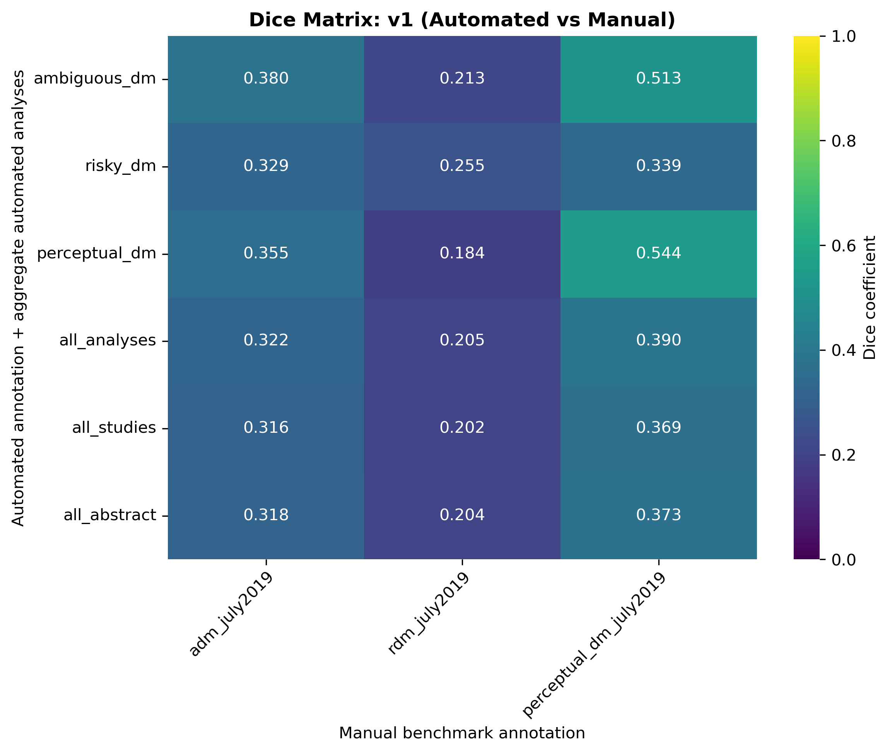
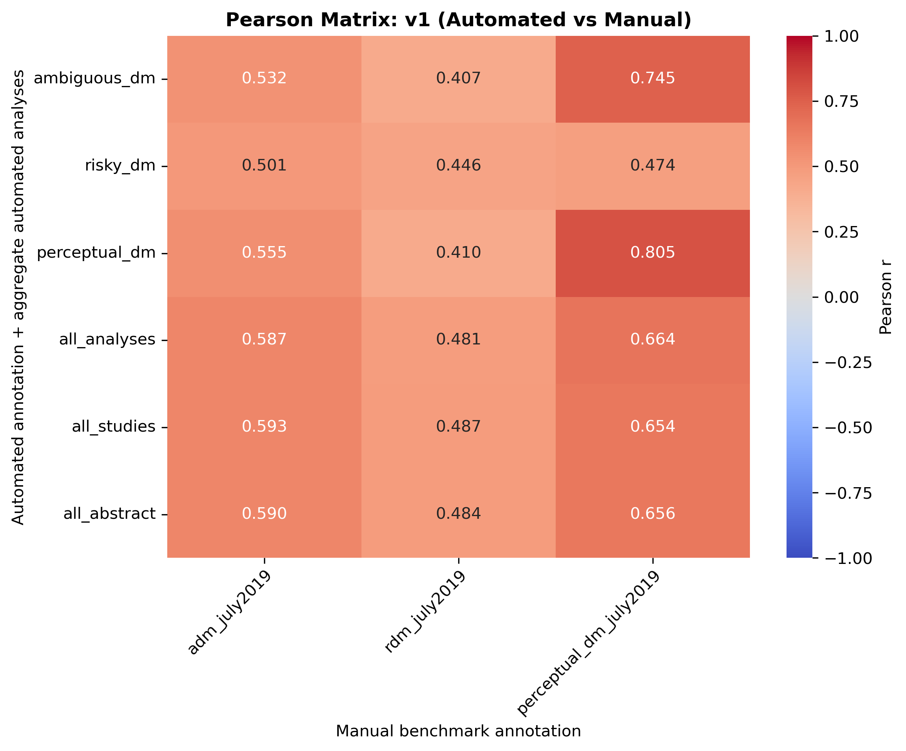
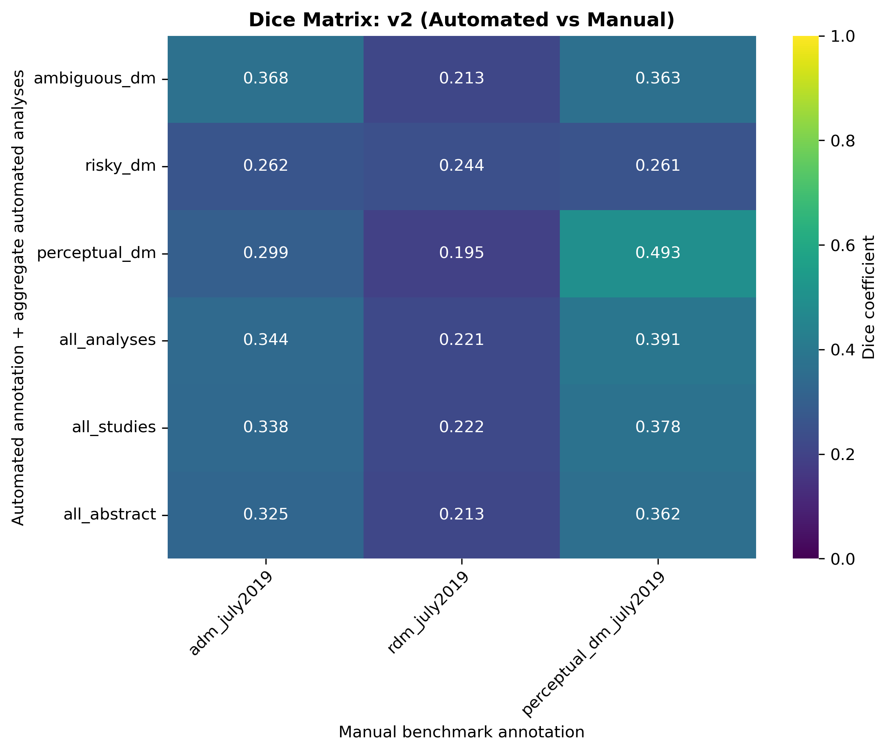
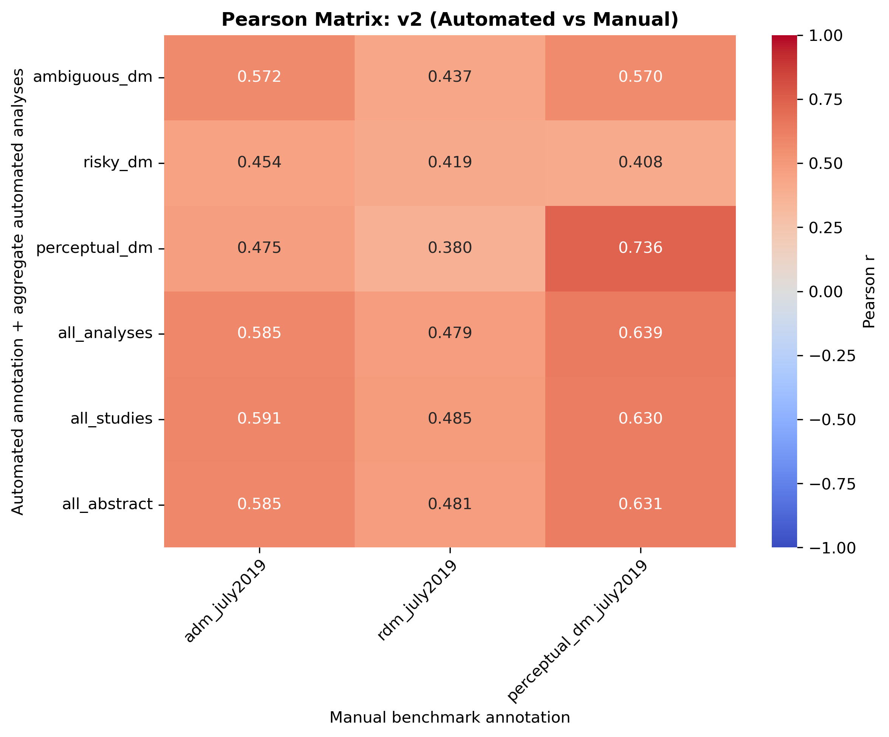
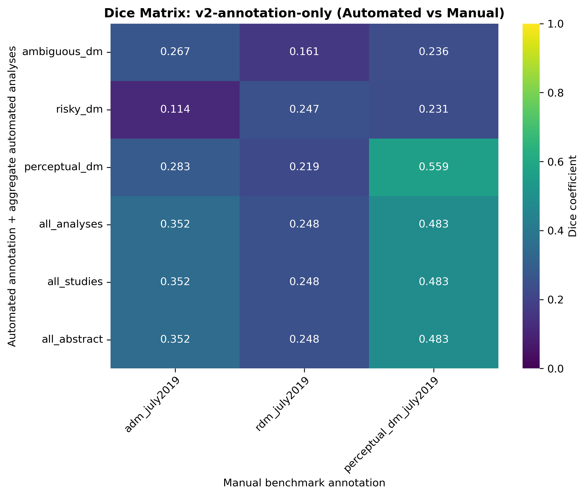
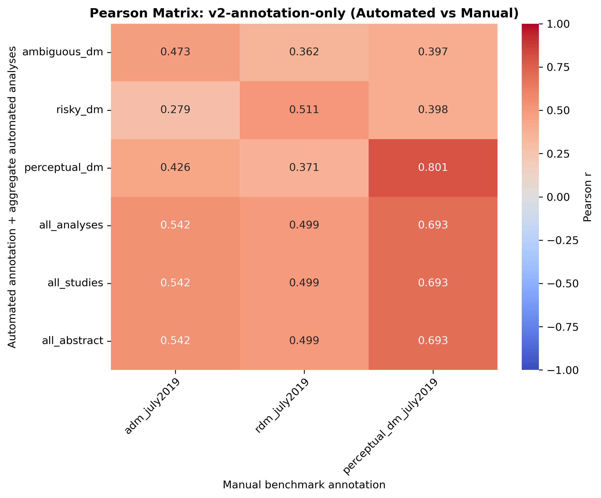
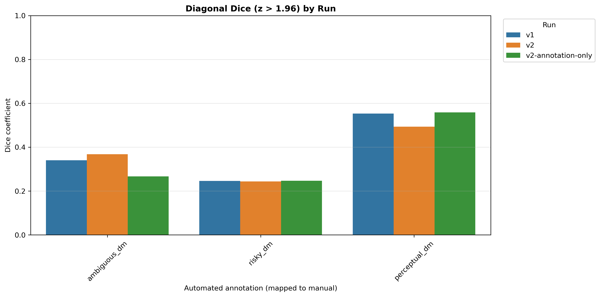
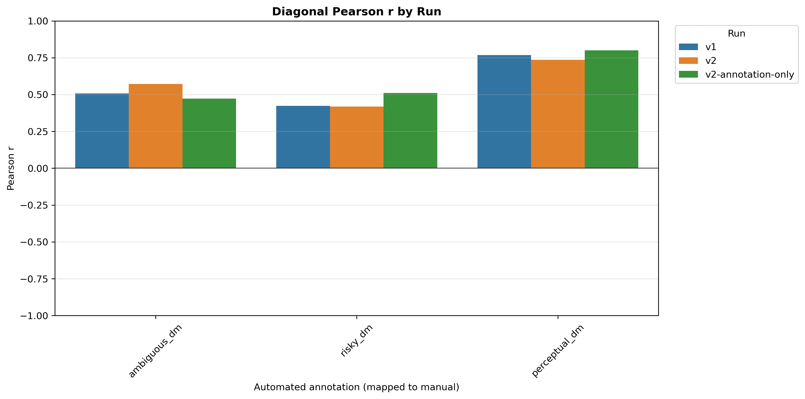
Ordered as manual benchmark first, then each automated run. Includes only all_analyses and mapped custom annotations.
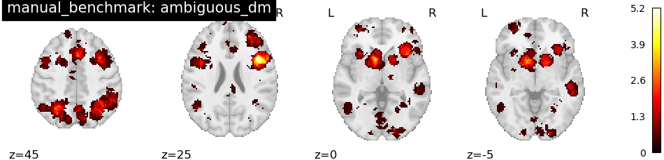
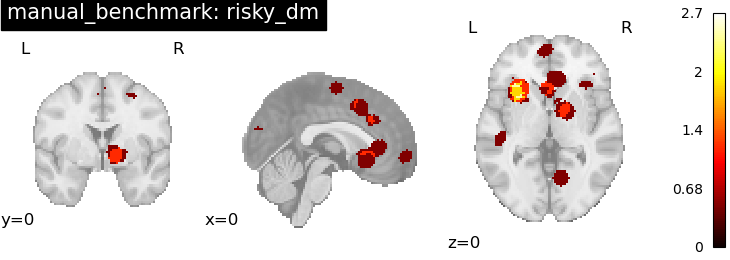
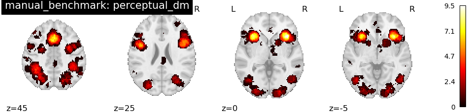
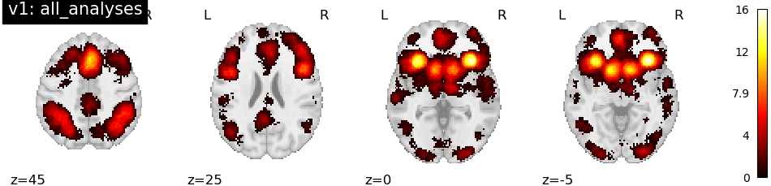
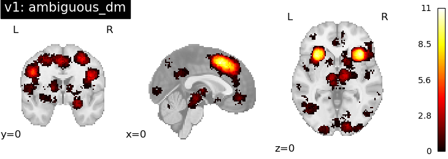
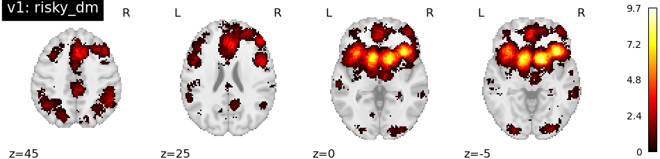
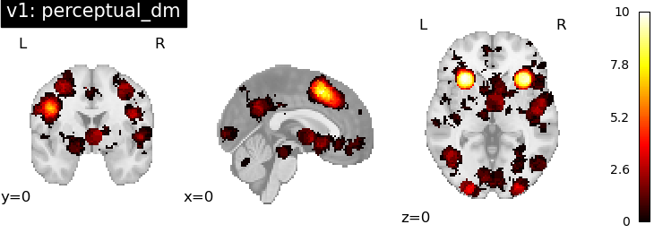
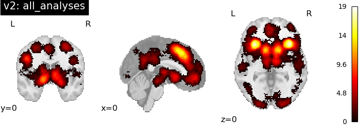
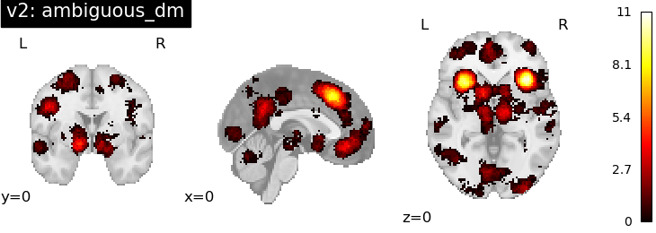
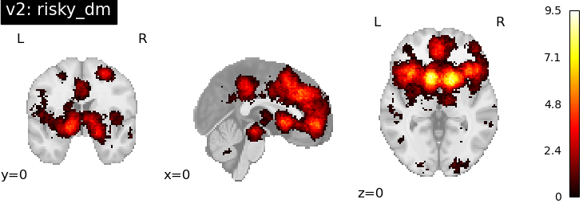
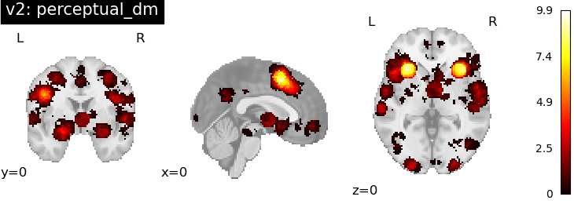
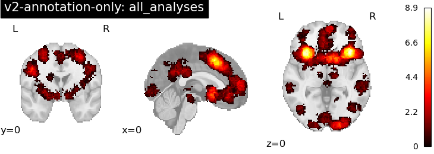
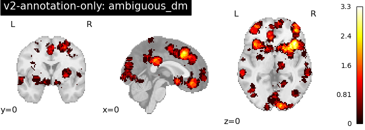
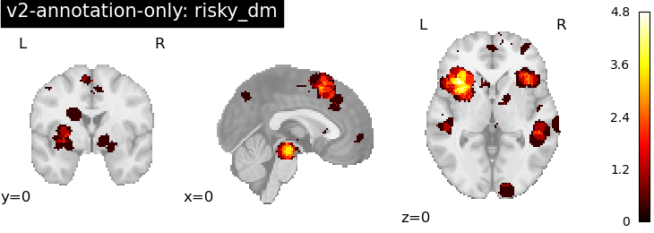
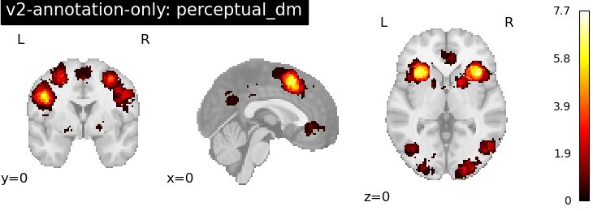